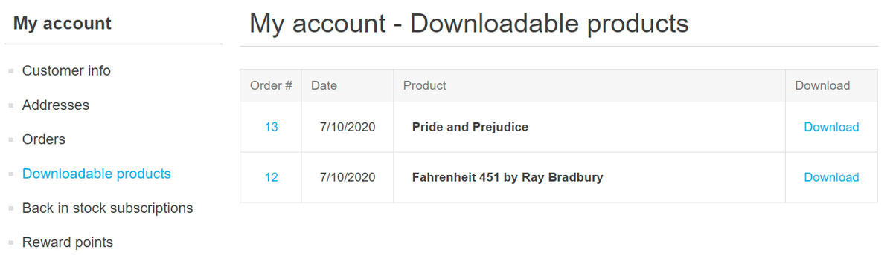
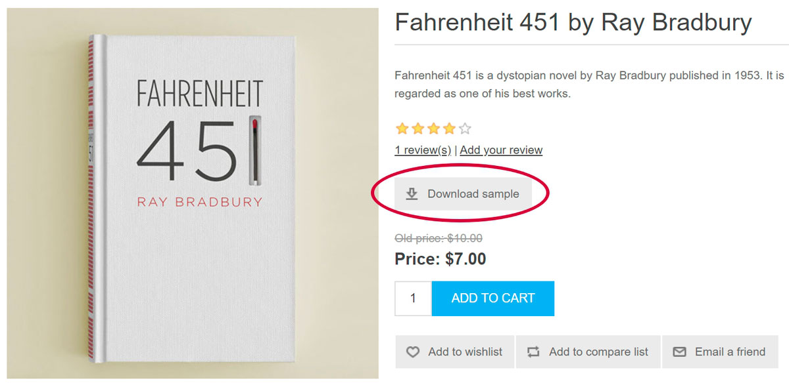
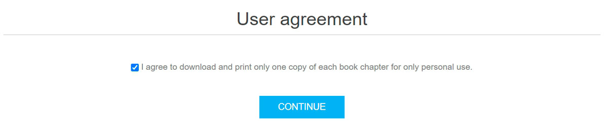
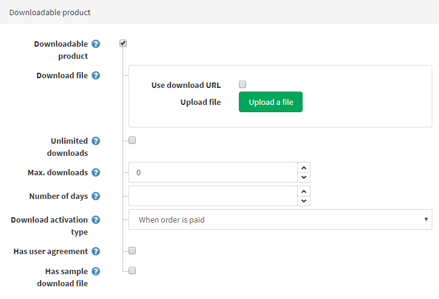

Downloadable products
The downloadable products functionality is useful when you are going to sell e-books or audiobooks, courses, PDFs, music, software or you want to create a picture stock, for example.
Example
Let's say you wish to sell e-books.
What distinguishes an e-book store from other stores?
First of all, you should provide the customers with an easy way to download books from your store. In nopCommerce, customers can find all the downloadable products they bought in the "My account" section: 
You might also wish to allow your customers to preview some parts of the books they want to buy. In this case, your customers will see the following Download sample button on the product details page: 
Or it might be useful to ask a customer to sign a user agreement before downloading an e-book. For example, agree to download and print one copy of each e-book chapter for personal use only. This is how a customer will see this agreement: 
All these features can be set up when you are editing a product. Futhermore, in special cases, you can restrict downloads of a certain book by setting up the number of days during which customers keep access to the book or maximum downloads number. Or you can choose when a customer is enabled to download a book: immediately after the book is paid or after manual validation.
If you have already learned how to set up a common product, learn how to make this product downloadable in the section below.
Set up a downloadable product
To create a downloadable product, go to Catalog → Products. Click Add new, fill in the common product fields, and select the corresponding checkbox in the Downloadable product panel.

Define the following details:
- In the Download file section, upload the file using the Upload a file button or use download URL by selecting the corresponding checkbox and entering the Download URL.
- Unlimited downloads in case the product can be downloaded an unlimited number of times. When this option is clear, an additional field appears.
- In the Max. downloads field, enter the maximum number of downloads given to a customer after purchasing the product.
- The Number of days during which customers keep access to the file. Leave this field empty if you want to enable continuous downloads.
- Download activation type:
- When order is paid — select this option to enable the download only when the order payment status is "Paid."
- Manually — select this option to give control to the store administrator. When this option is selected, the administrator must manually activate the download. This is performed in the Products panel of an Edit order details page.
- Has user agreement — if a customer must sign a user agreement in order to be able to download the product.
- User agreement text editor is then displayed, enabling you to enter/edit the user agreement text.
- Has sample download file allows a customer to download a sample file.
- If this is applicable, upload the Sample download file using the Upload a file button or use download URL by selecting the corresponding checkbox and entering the Download URL. It will be shown on the product details page and can be downloaded by any customer free of charge.
Tip
Since downloadable products require no shipping, make sure the Shipping enabled field is clear in the Shipping panel.
Tip
Since you don't need to track inventory of downloadable products, make sure the Inventory method field is set to Don't track inventory in the Inventory panel.
Customer registration
Decide whether customer registration is required for downloadable products by selecting the Require registration for downloadable products checkbox in the Common panel on the Configuration → Settings → Customer settings page.
Downloadable products account page
If you would like to hide the 'Downloadable products' menu item from the customer account page, go to the Configuration → Settings → Customer settings page and select the Hide 'Downloadable products' tab checkbox.